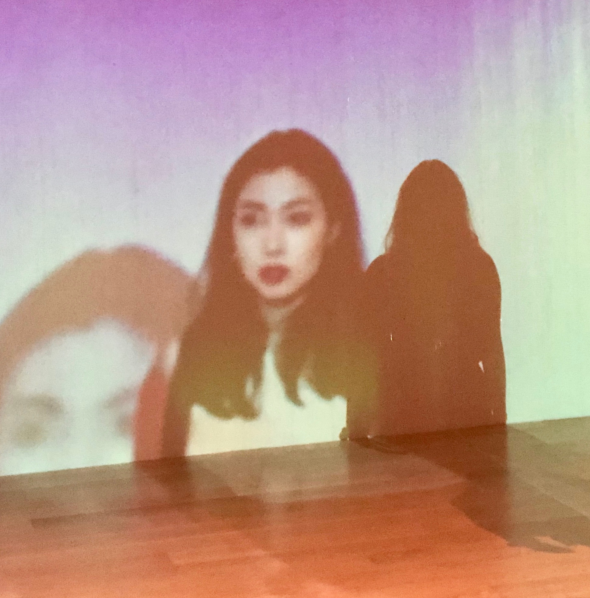

______ _ _ _ _ ____ ____ / /___ \ | | | (_) (_) / /\ \ |___ \ / / __) | | | _____ _____ ___ _ __ | |_ _ __ ___ _____ _ __ ___ / / \ \ __) | < < |__ < | |/ _ \ \ / / _ \ / _ \| '_ \| | | '_ \ / _ \ |_ / | '_ \ / _ \ < < \ \ |__ < \ \ ___) | | | (_) \ V / __/ | (_) | | | | | | | | | __/ / /| | | | | __/ \ \ \ \ ___) | \_\____/ |_|\___/ \_/ \___| \___/|_| |_|_|_|_| |_|\___| /___|_|_| |_|\___| \_\ \_\____/
<3 love online <\3 is a zine that examines how the internet™ has affected our relationships with one another -- our break-ups, hook-ups, and everything in between. How has digital life affected the way we love in our wider worlds?
We hired artists and writers who belong to marginalized groups to contribute pieces for this project. We gave priority to people with a connection to Montreal / Tiohtiá:ke.
Who we are:

d i s t r i b r u t i o n
A beta version (v 1.0) of <3 love online <\3 was released IRL on January 30, 2020 at the dope zine fair ctrlz.ai in Barcelona, Spain.
The team is still in talks about how and when to distribute the zine more broadly: please keep checking back for more information and follow us on Twitter and Instagram to stay in the loop!
Acknowledgements
The editors of <3 love online <\3 acknowledge that Montreal is unceded land, Tiohtiá:ke, which has been home and territory to the Kanien’kehá:ka and Anishinabeg indigenous communities before us. But lands acknowledgement are not enough and the editors of this zine are committed to honouring and standing strong with Indigenous communities who are continuously displaced, erased, and who are mistreated on their own lands. We stand with Indigenous people and will continue to do so until their future generations are secure.
We strongly encourage readers to learn the histories of the people of this land and the impacts of colonialism in Canada, which includes the high rates of missing and murdered Indigenous women, the overrepresentation of Indigenous youth in foster care, and the high incarceration rate of Indigenous people. We see and want to acknowledge the shared struggle especially of Indigenous and Black people in Canada, and stand in deep solidarity with all marginalized folks being affected by hegemonic systems of oppression. (Thanks to Dez Gregoire based in Tiohtiá:ke for greatly informing the language of this land acknowledgement.)
<3 love online <\3 would not have been possible without the financial support of the Digital Justice Lab in Toronto, which helped us pay our artists. We would especially like to thank co-editor Maggie for getting the zine call-out off the ground and for her fantastic illustrations that are featured throughout <3 love online <\3.
_____ _ _ __
|_ _| | | | / _|
| | | |__ __ _ _ __ | | _____ | |_ ___ _ __
| | | '_ \ / _` | '_ \| |/ / __| | _/ _ \| '__|
| | | | | | (_| | | | | <\__ \ | || (_) | |
\_/ |_| |_|\__,_|_| |_|_|\_\___/ |_| \___/|_|
_ _ _
| | (_) | |
_ _ ___ _ _ _ __ | |_ _ _ __ ___ ___| |
| | | |/ _ \| | | | '__| | __| | '_ ` _ \ / _ \ |
| |_| | (_) | |_| | | | |_| | | | | | | __/_|
\__, |\___/ \__,_|_| \__|_|_| |_| |_|\___(_)
__/ |
|___/